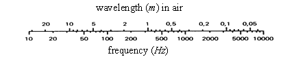

13 Acoustics
13.1 Abbreviations and Terminology
Abbreviations
| ANSI | American National Standards Institute |
| \(\text{dB}\) | decibels |
| \(f\) | frequency, cycles/sec |
| \(p\) | pressure |
| \(\text{pW}\) | \(10^{-12}\) Watts |
| \(x\) | \(\mathrm{RMS}\) value of quantity |
| \(x_0\) | reference value of quantity |
| \(\mu Pa\) | \(10^{-6}\) Pascals |
| \(\text{Hz}\) | Hertz |
| \(nm\) | \(10^{-9}\) meters |
| \(P\) | sound power |
Terminology
| decade | band with the upper frequency x10 that of the lower |
| decibels | measure of a magnitude, \(\text{dB} = 10 \log_{10}\) (mag) |
| far field | beyond the near field (region where sound level drops \(-6\,\text{dB}\) as distance from the source doubles). |
| Hertz | frequency in cycles/second |
| narrow band | band whose width is less than one-third octave but less than \(1\%\) of the center frequency near field range within a distance equal to the wavelength of the lowest frequency emitted or twice the greatest dimension of the subject |
| octave | a band with the upper frequency exactly twice the lower frequency1 |
| pink noise | has equal energy in each octave from \(20\) to \(20\,000\) Hz, or with an energy content inversely proportional to frequency |
| random noise | does not have a uniform frequency spectrum and has an amplitude, as a function of time, consistent with a Gaussian distribution curve |
| third-octave | highest frequency \(= 1.26\) x lower frequency (ratio \(= 2^{\frac{1}{3}}\) ) |
| white noise | has a constant spectrum level over the entire band of audible frequencies (need not be random) |
13.2 Acoustic Velocities, Spectrum, and Reference Levels
Acoustic Velocity (speed of sound)
| Medium | Approximate Velocity, \(\frac{\text{m}}{\text{s}}\) |
|---|---|
| Air (\(20° \text{C}\) ) | \(343\) |
| Fresh water | \(1\,480\) |
| Aluminum | \(5\,150\) |
| Concrete | \(3\,600\) |
| Glass | \(5\,300\) |
| Steel | \(6\,000\) |
\[\begin{equation*} \text{Wavelength, } \lambda = \frac{\text{acoustic velocity}}{\text{frequency}} \end{equation*}\]
Human hearing range is approximately \(20\) to \(20\,000 \text{ Hz}\)

- Ultrasound lies above \(20\,000 \text{ Hz}\)
- Infrasound lies below \(20 \text{ Hz}\)
Acoustic Reference Levels
| Quantity | Formula | Reference |
|---|---|---|
| Velocity \(\left( L_v \right)\) | \(20 \log \left( \frac{v}{v_0} \right)\) | \(v_0 = 10 \frac{\text{nm}}{\text{s}^2}\) |
| Intensity \(\left( L_I \right)\) | \(10 \log \left( \frac{I}{I_0} \right)\) | \(I_0 = 1 \frac{\text{pW}}{\text{m}^2}\) |
| Sound Power Level \(\left( L_W \right)\) | \(10 \log \left( \frac{P}{P_0} \right)\) | \(P_0 = 1 \text{ pW}\) |
| Sound Pressure Level, \(\mathrm{SPL}\) \(\left( L_p \right)\) | \(20 \log \left( \frac{p}{p_0} \right)\) | \(P_0 = 1\,\mu\text{Pa (air)}\) |
| Pressure Spectrum Level \(\left( \mathrm{PSL} \right)\) 2 | \(\mathrm{SPL} - 10 \log \Delta f\) | \(\text{dB}\) |
| Pressure Band Level \(\left( \mathrm{PBL} \right)\) | \(\mathrm{PSL} + 10 \log \Delta f\) | \(\text{dB}\) |
| Overall SPL \(\left( \mathrm{OASPL} \right)\) | \(10 \log_{10} \sum 10^{\frac{\mathrm{SPL}}{10}}\) | \(20\,\mu\text{Pa (air)}\) |
13.3 Acoustic Pressure and Intensity
Sound Pressure from Sound Power
| Transmission Environment | \(L_p\) |
| Free Field | \(L_W + \log Q - 20 \log r - 10.8 \text{ dB}\) |
| Reflecting Plane | \(L_W + \log Q - 20 \log r - 7.8 \text{ dB}\) |
| Reverberant Room | \(L_W + \log Q - 20 \log R - 6.2 \text{ dB}\) |
where
\[\begin{align} r &= \text{distance from source}\\ Q &= \text{directivity index of source}\\ R &= \text{room constant}\\ \end{align}\]
Acoustic Intensity
\[\begin{equation*} I - \frac{\text{Imaginary} \left[ G_{yx} \left( f \right) \right]}{4 \pi \rho_0 \Delta r f} = \frac{\text{Im} \left[ G_{yx} \left( f \right) \right]}{16.25 \Delta r f} \left( \text{for air} \right) \end{equation*}\]
where
\[\begin{align} \rho_0 &= \text{fluid density} = 1.293 \frac{\text{kg}}{\text{m}^3} \text{ for air}\\ \Delta r &= \text{microphone spacing (meters)}\\ f &= \text{frequency} \end{align}\]
Intensity Spectrum Level (ISL)
Intensity level of a sound contained within a band 1 \(\text{Hz}\) wide
\[\begin{equation*} \mathrm{ISL} = 10 \log \frac{I}{I_0 \Delta f} = \mathrm{IL} - 10 \log \Delta f \left( \text{dB} \right) \end{equation*}\]
where
\[\begin{align} f &= \text{center frequency of band} \\ I &= \text{sound intensity} \left( \frac{\text{watts}}{\text{m}^2} \right) \\ I_0 &= 10^{-12} \frac{\text{watt}}{\text{m}^2} \text{reference intensity} \\ \Delta f &= \text{bandwidth} \left( \text{Hz} \right) \\ \end{align}\]
13.4 Acoustic Weighting Curves
(ANSI S1.4 1983)
Weighting for SPL
| Nominal Freq | Exact Freq | A | B | C |
|---|---|---|---|---|
| \(\text{Hz}\) | \(\text{Hz}\) | \(\text{dB}\) | \(\text{dB}\) | \(\text{dB}\) |
| \(10.0\) | \(10.00\) | \(-70.4\) | \(-38.2\) | \(-14.3\) |
| \(12.5\) | \(12.59\) | \(-63.6\) | \(-33.3\) | \(-11.3\) |
| \(16.0\) | \(15.85\) | \(-56.4\) | \(-28.3\) | \(-8.4\) |
| \(20.0\) | \(19.95\) | \(-50.4\) | \(-24.2\) | \(-6.2\) |
| \(25.0\) | \(25.12\) | \(-44.8\) | \(-20.5\) | \(-4.4\) |
| \(31.5\) | \(31.62\) | \(-39.5\) | \(-17.1\) | \(-3.0\) |
| \(40.0\) | \(39.81\) | \(-34.5\) | \(-14.1\) | \(-2.0\) |
| \(50.0\) | \(50.12\) | \(-30.3\) | \(-11.6\) | \(-1.3\) |
| \(63.0\) | \(63.10\) | \(-26.2\) | \(-9.4\) | \(-0.8\) |
| \(80.0\) | \(79.43\) | \(-22.4\) | \(-7.3\) | \(-0.5\) |
| \(100.0\) | \(100.00\) | \(-19.1\) | \(-5.6\) | \(-0.3\) |
| \(125.0\) | \(126.90\) | \(-16.2\) | \(-4.2\) | \(-0.2\) |
| \(160.0\) | \(158.50\) | \(-13.2\) | \(-2.9\) | \(-0.1\) |
| \(200.0\) | \(199.50\) | \(-10.8\) | \(-2.0\) | \(0.0\) |
| \(250.0\) | \(251.20\) | \(-8.7\) | \(-1.4\) | \(0.0\) |
| \(315.0\) | \(316.20\) | \(-6.6\) | \(-0.9\) | \(0.0\) |
| \(400.0\) | \(398.10\) | \(-4.8\) | \(-0.5\) | \(0.0\) |
| \(500.0\) | \(501.20\) | \(-3.2\) | \(-0.3\) | \(0.0\) |
| \(630.0\) | \(631.00\) | \(-1.9\) | \(-0.1\) | \(0.0\) |
| \(800.0\) | \(794.30\) | \(-0.8\) | \(0.0\) | \(0.0\) |
| \(1\,000.0\) | \(1\,000.00\) | \(0.0\) | \(0.0\) | \(0.0\) |
| \(1\,250.0\) | \(1\,259.00\) | \(0.6\) | \(0.0\) | \(0.0\) |
| \(1\,600.0\) | \(1\,585.00\) | \(1.0\) | \(0.0\) | \(-0.1\) |
| \(2\,000.0\) | \(1\,995.00\) | \(1.2\) | \(-0.1\) | \(-0.2\) |
| \(2\,500.0\) | \(2\,512.00\) | \(1.3\) | \(-0.2\) | \(-0.3\) |
| \(3\,150.0\) | \(3\,162.00\) | \(1.2\) | \(-0.4\) | \(-0.5\) |
| \(4\,000.0\) | \(3\,981.00\) | \(1.0\) | \(-0.7\) | \(-0.8\) |
| \(5\,000.0\) | \(5\,012.00\) | \(0.6\) | \(-1.2\) | \(-1.3\) |
| \(6\,300.0\) | \(6\,310.00\) | \(-0.1\) | \(-1.9\) | \(-2.0\) |
| \(8\,000.0\) | \(7\,943.00\) | \(-1.1\) | \(-2.9\) | \(-3.0\) |
| \(10\,000.0\) | \(10\,000.00\) | \(-2.5\) | \(-4.3\) | \(-4.4\) |
| \(12\,500.0\) | \(12\,589.00\) | \(-4.3\) | \(-6.1\) | \(-6.2\) |
| \(16\,000.0\) | \(15\,849.00\) | \(-6.7\) | \(-8.5\) | \(-8.6\) |
| \(20\,000.0\) | \(19\,953.00\) | \(-9.3\) | \(-11.2\) | \(-11.3\) |
13.5 1/3 Octave Center Frequencies
(ANSI S1.6 1984)
| Band No. | Nominal Center | Exact Center | Octave Center |
|---|---|---|---|
| # | \(\text{Hz}\) | \(\text{Hz}\) | \(\text{Hz}\) |
| \(1\) | \(1.25\) | \(1.26\) | |
| \(2\) | \(1.60\) | \(1.58\) | |
| \(3\) | \(2.00\) | \(2.00\) | \(2\) |
| \(4\) | \(2.50\) | \(2.51\) | |
| \(5\) | \(3.15\) | \(3.16\) | |
| \(6\) | \(4.00\) | \(3.98\) | \(4\) |
| \(7\) | \(5.00\) | \(5.01\) | |
| \(8\) | \(6.30\) | \(6.31\) | |
| \(9\) | \(8.00\) | \(7.94\) | \(8\) |
| \(10\) | \(10.00\) | \(10.00\) | |
| \(11\) | \(12.50\) | \(12.59\) | |
| \(12\) | \(16.00\) | \(15.58\) | \(16\) |
| \(13\) | \(20.00\) | \(19.95\) | |
| \(14\) | \(25.00\) | \(25.12\) | |
| \(15\) | \(31.50\) | \(31.62\) | \(32\) |
| \(16\) | \(40.00\) | \(39.81\) | |
| \(17\) | \(50.00\) | \(50.12\) | |
| \(18\) | \(63.00\) | \(63.10\) | \(63\) |
| \(19\) | \(80.00\) | \(79.43\) | |
| \(20\) | \(100.00\) | \(100.00\) | |
| \(21\) | \(125.00\) | \(125.89\) | \(125\) |
| \(22\) | \(160.00\) | \(158.49\) | |
| \(23\) | \(200.00\) | \(199.53\) | |
| \(24\) | \(250.00\) | \(251.19\) | \(250\) |
| \(25\) | \(315.00\) | \(316.23\) | |
| \(26\) | \(400.00\) | \(398.11\) | |
| \(27\) | \(500.00\) | \(501.19\) | \(500\) |
| \(28\) | \(630.00\) | \(630.96\) | |
| \(29\) | \(800.00\) | \(794.33\) | |
| \(30\) | \(1\,000.00\) | \(1\,000.00\) | \(1\,000\) |
| \(31\) | \(1\,250.00\) | \(1\,258.90\) | |
| \(32\) | \(1\,600.00\) | \(1\,584.90\) | |
| \(33\) | \(2\,000.00\) | \(1\,995.30\) | \(2\,000\) |
| \(34\) | \(2\,500.00\) | \(2\,511.90\) | |
| \(35\) | \(3\,150.00\) | \(3\,162.30\) | |
| \(36\) | \(4\,000.00\) | \(3\,981.10\) | \(4\,000\) |
| \(37\) | \(5\,000.00\) | \(5\,011.90\) | |
| \(38\) | \(6\,300.00\) | \(6\,309.60\) | |
| \(39\) | \(8\,000.00\) | \(7\,943.30\) | \(8\,000\) |
| \(40\) | \(10\,000.00\) | \(10\,000.00\) | |
| \(41\) | \(12\,500.00\) | \(12\,589.30\) | |
| \(42\) | \(16\,000.00\) | \(15\,848.90\) | \(16\,000\) |
| \(43\) | \(20\,000.00\) | \(19\,952.60\) |
13.6 References
| 13.1 | Beranek, Leo L., “Acoustic Measurements,” John Wiley & Sons, New York, New York, 1956. |
| 13.2 | Peterson, Arnold P.G. and Gross, Ervin E., Jr., “Handbook of Noise Measurement,” GenRag Incorporated, Concord, Massachusetts, 1978. |
| 13.3 | “Measuring Sound,” (Pamphlet), Bruel & Kjaer, Naerum, Denmark, September 1984. |
| 13.4 | “Pocket Handbook, Noise, Vibration, Light, Thermal Comfort,” Bruel & Kjaer, Naerum, Denmark, 1986. |
Additional Reading
| Hunter, Joseph L., “Acoustics,” Prentice-Hall Incorporated, Englewood Cliffs, New Jersey, 1957. |